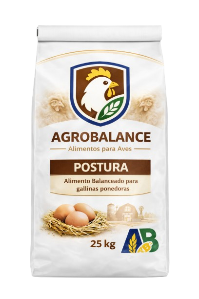

AgroBalance Aves
Descripción
AgroBalance Aves es una línea integral de balanceados diseñada para acompañar a la gallina ponedora desde el primer día de vida hasta el final del ciclo productivo. Nuestro enfoque se basa en nutrición estratégica, precisión técnica y adaptación productiva.
No trabajamos con fórmulas genéricas: desarrollamos estrategias nutricionales ajustadas a cada etapa fisiológica y a cada genética, con la combinación perfecta de proteínas, energía, vitaminas y minerales para cada fase productiva.
Línea Completa por Fase Productiva
Nuestra línea cubre todas las etapas del ciclo con formulaciones específicas para cada momento fisiológico:
Pre Inicial
Desarrollo temprano, estimulación del consumo y arranque uniforme del lote.
Inicial
Consolidación estructural, desarrollo digestivo y crecimiento controlado.
Crecimiento
Formación corporal estratégica y preparación metabólica para postura.
Pre Postura
Transición nutricional orientada al inicio productivo y estructura ósea.
Postura 1
Soporte al pico de producción y eficiencia alimenticia máxima.
Postura 2
Sostenimiento de persistencia productiva y calidad de cáscara.
Postura 3
Optimización de longevidad y estabilidad productiva al final del ciclo.
Postura Única
Alternativa eficiente para sistemas que requieren simplificación operativa.
Adaptación por Genética
Cada línea genética posee curvas productivas específicas. Nuestras formulaciones se ajustan según la raza del plantel para que la nutrición se adapte a la curva real de producción, no a promedios teóricos.
Beneficios Productivos
Recomendaciones de Manejo
- Proporcionar agua limpia y fresca en todo momento
- Almacenar en lugar fresco y seco, protegido de la humedad
- Suministrar en comederos limpios y en buenas condiciones
- Realizar transición gradual de 7 a 10 días al cambiar de fase
- Consultar con un técnico veterinario para ajustes específicos según la genética
- Mantener las instalaciones limpias y bien ventiladas
Ingredientes
Maíz molido, torta de soja, afrechillo de trigo, carbonato de calcio, fosfato dicálcico, sal común, premezcla vitamínica-mineral, metionina, lisina, aceite vegetal, antioxidantes, antifúngicos permitidos.
